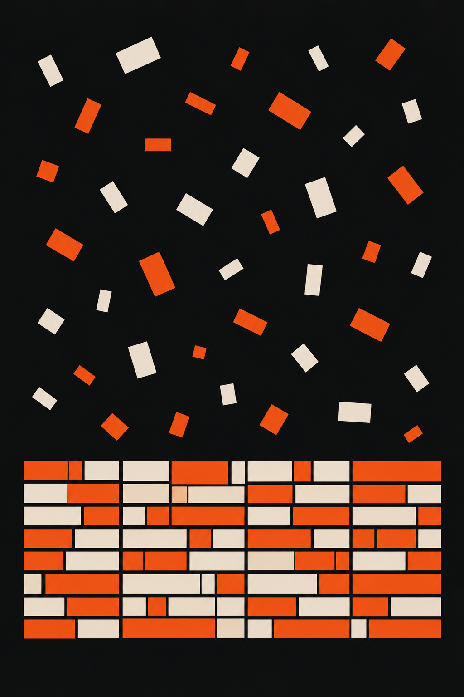

Flovah NoteJul.2026
만들고 끝나는 콘텐츠,
쌓이는 콘텐츠
쌓이는 콘텐츠
콘텐츠를 자산으로 만드는 아카이빙.
체계적으로 쌓는 구조를 정리합니다.
체계적으로 쌓는 구조를 정리합니다.
Flovah NoteJul.2026
01 · 정의
매번 새로 만드는데
남는 게 없습니다
남는 게 없습니다
지난달 만든 콘텐츠를 다시 찾을 수 없습니다.
비슷한 주제를 또 처음부터 기획합니다.
아카이빙이 없으면
같은 일을 반복하는 것입니다.
비슷한 주제를 또 처음부터 기획합니다.
아카이빙이 없으면
같은 일을 반복하는 것입니다.
Flovah NoteJul.2026
02 · 문제
콘텐츠가 자산이
안 되는 이유
안 되는 이유
완성 파일이 개인 폴더에 흩어져 있는
파편화된 저장
파편화된 저장
파일명이 '최종_진짜최종_v3'인
버전 관리 부재
버전 관리 부재
어떤 목적으로 만들었는지 기록이 없는
맥락 소실
맥락 소실
Flovah NoteJul.2026
03 · 관점
아카이빙은
정리가 아닙니다
정리가 아닙니다
폴더에 넣어두는 것은 저장이지
아카이빙이 아닙니다.
아카이빙은 '다시 쓸 수 있는 상태'로
만드는 것입니다.
찾을 수 있고, 맥락을 알 수 있고,
재활용할 수 있을 때 자산이 됩니다.
아카이빙이 아닙니다.
아카이빙은 '다시 쓸 수 있는 상태'로
만드는 것입니다.
찾을 수 있고, 맥락을 알 수 있고,
재활용할 수 있을 때 자산이 됩니다.
Flovah NoteJul.2026
04 · 차이
저장과 아카이빙의
차이
차이
BEFORE폴더에 날짜순으로 넣어둠
NOW카테고리 + 태그로 분류
BEFORE파일만 보관
NOW기획 의도, 성과 데이터 함께 기록
BEFORE만든 사람만 찾을 수 있음
NOW누구나 검색으로 접근 가능
Flovah NoteJul.2026
05 · 구조
콘텐츠 아카이빙
기본 구조
기본 구조
Sort
카테고리 체계
채널, 포맷, 주제,
캠페인별 분류 기준
캠페인별 분류 기준
Log
메타데이터 기록
제작일, 목적, 타깃,
성과 지표를 함께
성과 지표를 함께
Name
명명 규칙 통일
날짜_채널_주제_버전
형태의 일관된 네이밍
형태의 일관된 네이밍
Access
중앙 저장소
팀 전체가 접근 가능한
공유 폴더 또는 도구
공유 폴더 또는 도구
Flovah NoteJul.2026
06 · 솔직히
"콘텐츠가 많지 않은데
필요한가요?"
필요한가요?"
콘텐츠가 적을 때 시작하는 게
오히려 쉽습니다.
10개일 때 구조를 잡으면
100개가 되어도 관리가 가능합니다.
아카이빙은 많아서 하는 게 아니라
자산으로 만들기 위해 하는 것입니다.
오히려 쉽습니다.
10개일 때 구조를 잡으면
100개가 되어도 관리가 가능합니다.
아카이빙은 많아서 하는 게 아니라
자산으로 만들기 위해 하는 것입니다.
Flovah NoteJul.2026
07 · 원칙
아카이빙에서
반드시 지키는 것
반드시 지키는 것
제각각의 네이밍은 아무도 못 찾습니다
파일명 규칙을 통일할 것
파일명 규칙을 통일할 것
파일만 있으면 '왜'를 모릅니다
맥락을 함께 기록할 것
맥락을 함께 기록할 것
분기에 한 번이라도 리뷰하면 달라집니다
정기적으로 정리할 것
정기적으로 정리할 것
Flovah NoteJul.2026
08 · 제안
쌓이는 구조가
속도를 만듭니다
속도를 만듭니다
좋은 아카이빙은
다음 기획의 출발점이 됩니다.
"지난 콘텐츠를
3분 안에 찾을 수 있는가?"
대답이 막힌다면,
지금이 구조를 잡을 때입니다.
다음 기획의 출발점이 됩니다.
"지난 콘텐츠를
3분 안에 찾을 수 있는가?"
대답이 막힌다면,
지금이 구조를 잡을 때입니다.
Flovah NoteJul.2026
복잡한 이야기를
명료하게, 완벽하게.
명료하게, 완벽하게.
www.flovah.com
Upload Note
캡션
만들고 끝나는 콘텐츠와 쌓이는 콘텐츠의 차이는 아카이빙입니다.
"지난 콘텐츠를 3분 안에 찾을 수 있는가?" 대답이 막힌다면 이 글이 도움이 될 거예요.
"지난 콘텐츠를 3분 안에 찾을 수 있는가?" 대답이 막힌다면 이 글이 도움이 될 거예요.
해시태그